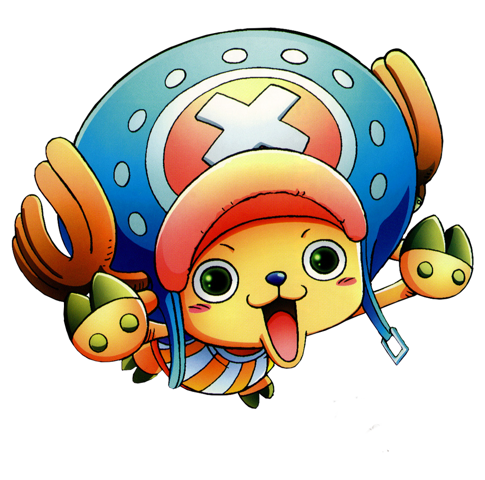

Menu
Menu

Tony Tony Chopper
Tony Tony Chopper é um personagem ficticio da obra "One Piece". Ele era uma rena, que acabou sendo rejeitado por seu bando devido a sua aparência diferente, Chopper então sozinho, acaba encontrando e consumindo uma fruta chamada "Hito Hito no Mi", que lhe deu habilidades de parcialmente se transformar, e raciocinar como um humano, e ele então, inspirado por um médico, acaba estudando e seguindo o mesmo caminho da medicina, para então posteriormente se tornar membro e médico da tripulação de piratas de "Monkey D. Luffy".
